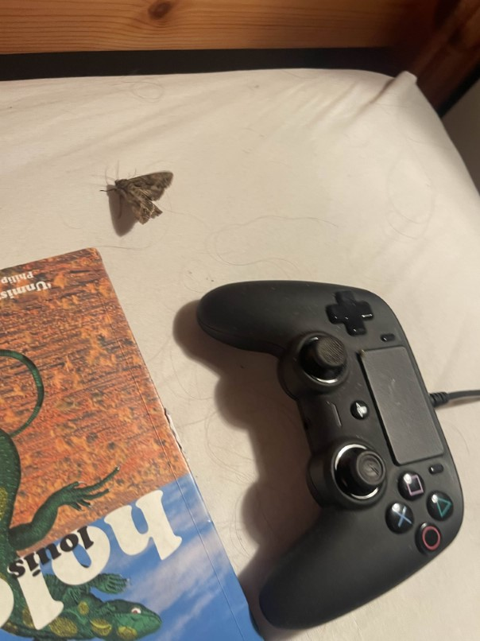
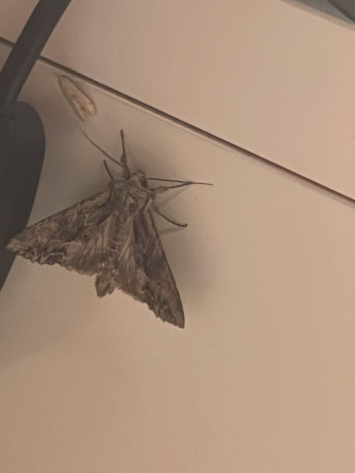

As I am writing this I am laying in bed listening to Imaginal Disk by Magdalena Bay as a lot of moths are flying me and stuff. I am trying to pass the time until there is light outside so they will all sod off outside instead of existing in my room. I am not scared of moths I simply think that the idea of one landing on me in my sleep would be really unpleasant, especially cos there is this one wass moth (see below) that is big. I’m also not just paranoid because they ARE landing on me and I don’t want it happening while I am not conscious. It’s the holidays so I can afford to not sleep for a bit like this and I have not slept previously for the sake of alcohol anyway so we are good on that front.
It’s interesting to see all these bugs and I think it would be very interesting if it was anywhere other than my room and unfortunately I would currently find it very pleasing if they would all fuck off. Will update later.

New update. If you need to know how much time has passed I am now on the track “Tunnel Vision”. I realised I did not entirely describe my situation previously so I would like to add that I am in long sleeved pyjamas tucked into my quilt so no moth can touch my body parts that aren’t my face. This sucks as it is currently very warm in Britain summertime and, if you have experienced it before, you will know that you do not want to be in long pyjamas and under the covers. I am very warm. Luckily I do have a fan but it does not create miracles. I have had to roll my trouser legs up due to the heat. I was wondering about just going to sleep and hoping for the best but then the big moth came up from the other side of my bed and flew over me to the other side and I do definitely do not want it on my face if I am asleep. It later came out again and I got some new photos (see below). Earlier I sneezed and a few of them flew about and thought that was notable. Will report again later.

I am at the end of Angel on a Satellite. The big moth went to a different part of my room. I am glad I did not make a joke about eating it or something for fear of it reading my mind. I think I can afford to turn off my light and go to sleep now. Maybe stay under the covers. The bugs still are strange looking. As for magdalena bay, I think it’s a good album but I will have to reslisten as I was distracted. Good night and wish me luck.
Putting this on the site, I can say that a moth did touch my hand but I couldn't see it as it was dark but other than that I slept soundly. I have started shutting my window during the eveningtime.
back